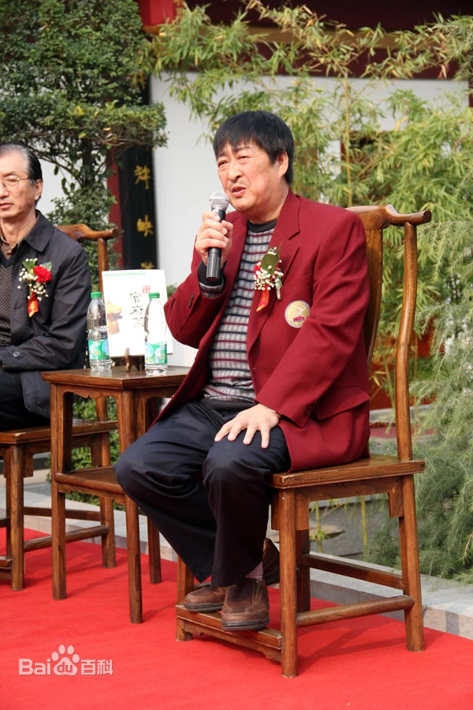
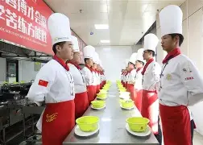

郑新民 · 陕菜传承人
一、基本信息
- 郑新民（1954年—），陕西省西安市长安区人
- 陕西官府菜第三代传人，中国烹饪协会名厨专业委员会资深常委
- 国家一级评委、国家职业技能鉴定专家
现任职务：
- 中国烹饪协会名厨专业委员会资深常委
- 陕西官府菜文化沙龙创始人
- 国家一级评委
- 国家职业技能鉴定专家
- 陕西官府菜文化沙龙创始人
二、从艺经历
少年入行，名师指点
郑新民1954年出生于西安长安区一个普通家庭。1970年，16岁的他进入西安著名老字号“同兴楼”学徒。同兴楼是当时西安最具影响力的餐饮名店之一，以经营陕西官府菜和传统名菜闻名。在这里，他先后师从靳宣敏、张生财等陕菜泰斗。靳宣敏是陕西官府菜的第二代传人，对菜肴的选料、刀工、火候要求极为严格。郑新民从最基础的水台、砧板做起，每天凌晨四点起床，洗菜、切菜、练刀工。师傅常说：“做菜如做人，一招一式都要扎实。”这句话，郑新民记了一辈子。
勤学苦练，崭露头角
在同兴楼的十年间，郑新民几乎把所有时间都花在了厨房里。别人下班了，他还在练瓢功；别人休息了，他还在研究火候。陕西官府菜讲究“汤清味醇、火候精准、造型典雅”，每一道菜都有严格的工艺标准。为了练好吊汤技艺，他连续三个月守在汤锅旁，记录每一次的火候变化、用料配比。1982年，陕西省举办首届烹饪技术比赛，郑新民凭借一道“奶汤锅子鱼”一举夺得“最佳厨师”称号，开始在陕西烹饪界崭露头角。
走向世界，为国争光
2005年，郑新民代表中国参加在德国举办的第五届世界烹饪大赛。在这场全球顶级厨艺盛会上，他带领的中国队以精湛的技艺和创新的菜品设计，夺得了团体金奖和个人热菜金牌。这是中国烹饪界的一次重大突破，也让世界看到了陕菜的独特魅力。赛后，郑新民受到了国家领导人的接见，并被授予“中国烹饪大师”称号。
守护非遗，传承使命
2011年，郑新民推动“陕西官府菜”成功列入陕西省非物质文化遗产名录。这一举措不仅保护了这一传统技艺，也为陕菜的传承和发展提供了法律保障。郑新民深知，作为非遗传承人，肩负着传承和弘扬陕菜文化的重任。他成立了“陕西官府菜文化沙龙”，定期组织研习活动，培养了一批又一批的陕菜传承人。同时，他还参与编写了《陕西官府菜》专著，系统整理了官府菜的制作技艺和文化内涵。
著书立说，薪火相传
从艺五十多年来，郑新民不仅在后厨磨练技艺，还积极参与烹饪教育事业。他参与编写了《陕西官府菜》专著，系统记录了上百道官府菜的制作方法和文化内涵。他还受聘于多所烹饪院校，担任客座教授，将毕生所学传授给年轻一代。他的课堂总是座无虚席，学生们说：“郑老师教的不仅是做菜，更是做人的道理。
三、核心技艺
- “花打四门”郑新民独创的瓢功绝技。在炒制过程中，通过手腕的精妙控制，将锅中菜肴分别向前、后、左、右四个方向翻动。这一技法使食材在锅中受热均匀、入味透彻，每一块原料都能充分吸收汤汁和调料的味道。看似简单的翻动，实则蕴含数十年功力——力度要恰到好处，翻早了不入味，翻晚了会糊锅。
- “飞火炒菜”：利用高油温瞬间激发出“锅气”的烹饪绝活。当锅中油温升至恰到好处时，郑新民快速下料、翻动、颠勺，火焰从锅底蹿起包裹食材，整个过程不过十几秒。这种技法锁住了食材的水分和鲜味，菜肴出锅时香气四溢、鲜香浓郁。这是陕西官府菜“火候精准”的典型体现，也是最考验厨师功底的一环。
- 还原唐代宫廷宴席郑新民完整继承了陕西官府菜的制作体系和烹饪理念。官府菜讲究“汤清味醇、火候精准、造型典雅”，对选料、刀工、吊汤、火候都有极为严格的要求。他不仅复原了唐代烧尾宴中的多道经典菜品，还对官府菜的制作流程进行了系统整理，使其更易于传承和教学。
- 代表菜品：驼蹄羹、葫芦鸡、温拌腰丝、奶汤锅子鱼
四、传承与贡献

- 已收徒百余人，遍布全国各地
- 成立“陕西官府菜文化沙龙”，定期组织研习活动
- 参与编写《陕西官府菜》专著，系统整理官府菜制作技艺
- 多次受邀赴日本、韩国、法国进行陕菜文化推广
- 坚持“传艺先传德”，培养了一批陕菜传承人
五、社会荣誉
- 中国烹饪协会“中国烹饪大师”称号
- 陕西省人民政府“陕西非遗传承人”认定
- 西安市商务局“西安餐饮功勋人物”
- 第五届世界烹饪大赛团体金奖、个人热菜金牌